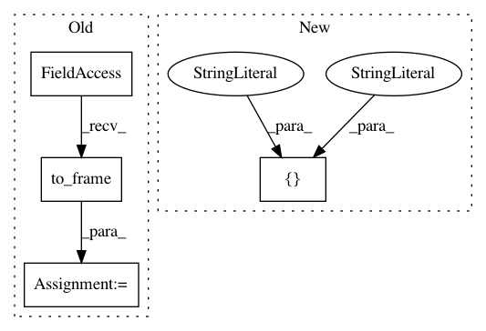

a788c58c0747f39c4f2e26d009ded2fec893d799,dlpy/tests/test_metrics.py,TestMetrics,test_confusion_matrix,#TestMetrics#,162
Before Change
except:
unittest.TestCase.skipTest(self, "sklearn is not found in the libraries")
local_class1 = self.class_table1.to_frame()
skcm_matrix1 = skcm(local_class1.target, local_class1.p_target)
skcm_matrix2 = skcm(local_class1.target, local_class1.p_target, labels=[1, 3, 4])
dlpycm_matrix1 = confusion_matrix(self.class_table1.target, self.class_table1.p_target)
After Change
skcm_matrix4 = skcm(self.local_class1.target, self.local_class2.p_target, labels=[1, 3, 4])
dlpycm_matrix3 = confusion_matrix(self.class_table1.target, self.class_table2.p_target,
idvars=["id1", "id2"])
dlpycm_matrix4 = confusion_matrix(self.class_table1.target, self.class_table2.p_target,
labels=[1, 3, 4], idvars=["id1", "id2"])
In pattern: SUPERPATTERN
Frequency: 3
Non-data size: 4
Instances
Project Name: sassoftware/python-dlpy
Commit Name: a788c58c0747f39c4f2e26d009ded2fec893d799
Time: 2019-03-10
Author: rui.li@sas.com
File Name: dlpy/tests/test_metrics.py
Class Name: TestMetrics
Method Name: test_confusion_matrix
Project Name: sassoftware/python-dlpy
Commit Name: a788c58c0747f39c4f2e26d009ded2fec893d799
Time: 2019-03-10
Author: rui.li@sas.com
File Name: dlpy/tests/test_metrics.py
Class Name: TestMetrics
Method Name: test_roc_auc_score
Project Name: sassoftware/python-dlpy
Commit Name: a788c58c0747f39c4f2e26d009ded2fec893d799
Time: 2019-03-10
Author: rui.li@sas.com
File Name: dlpy/tests/test_metrics.py
Class Name: TestMetrics
Method Name: test_accuracy_score